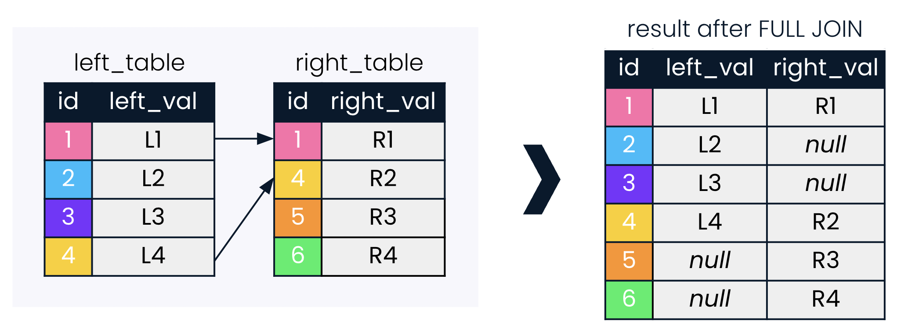

This chapter walks through the most common steps involved in taking raw data and turning it into analysis-ready data. You’ll learn how to import datasets, clean and transform variables, handle missing values, combine multiple data sources, and filter data to answer specific questions. Along the way, we’ll introduce essential R data-management functions-mostly from the tidyverse-and show how to chain them together using pipes to create clear, readable workflows.
5.1 Loading data from a file
Often your data will be stored in a file that you need to load into R. Common examples include:
File type
Extension
Common function
Package
Excel spreadsheet
.xlsx
read_excel()
readxl
Comma-separated values
.csv
read_csv()
readr
Stata dataset
.dta
read_dta()
haven
Note: You can use read_csv() and read_excel() after loading tidyverse. You can also use rio package, which has an import() function that works for just about any data file type you might want.
library(tidyverse)
Warning: package 'tibble' was built under R version 4.5.2
Warning: package 'purrr' was built under R version 4.5.2
Warning: package 'dplyr' was built under R version 4.5.2
── Attaching core tidyverse packages ──────────────────────── tidyverse 2.0.0 ──
✔ dplyr 1.2.0 ✔ readr 2.1.5
✔ forcats 1.0.0 ✔ stringr 1.5.1
✔ ggplot2 3.5.2 ✔ tibble 3.3.1
✔ lubridate 1.9.4 ✔ tidyr 1.3.1
✔ purrr 1.2.1
── Conflicts ────────────────────────────────────────── tidyverse_conflicts() ──
✖ dplyr::filter() masks stats::filter()
✖ dplyr::lag() masks stats::lag()
ℹ Use the conflicted package (<http://conflicted.r-lib.org/>) to force all conflicts to become errors
water <-read_csv("../data/water_data.csv")
Rows: 76736 Columns: 6
── Column specification ────────────────────────────────────────────────────────
Delimiter: ","
dbl (6): year, field, price_water, q_water, center_pivot, county
ℹ Use `spec()` to retrieve the full column specification for this data.
ℹ Specify the column types or set `show_col_types = FALSE` to quiet this message.
year field price_water q_water
Min. :1992 Min. : 1 Min. :0.01553 Min. : 0.000005
1st Qu.:1996 1st Qu.: 6015 1st Qu.:0.20199 1st Qu.:10.110240
Median :2000 Median :12099 Median :0.51795 Median :14.066380
Mean :2000 Mean :12058 Mean :0.71312 Mean :14.048993
3rd Qu.:2004 3rd Qu.:18118 3rd Qu.:0.98047 3rd Qu.:17.824100
Max. :2007 Max. :24086 Max. :5.42991 Max. :30.000000
center_pivot county
Min. :0.0000 Min. : 1.00
1st Qu.:1.0000 1st Qu.: 7.00
Median :1.0000 Median :22.00
Mean :0.9261 Mean :20.83
3rd Qu.:1.0000 3rd Qu.:33.00
Max. :1.0000 Max. :41.00
water <- water %>%rename(county_code = county) #rename
5.4 Selecting and filtering data
# Create a subset with only two variables: year and county_codesub1 <- water %>%select(year, county_code)# Get rid of the field variablesub2 <- water %>%select(-field)# Create a subset containing only year=2000sub.2000<- water %>%filter(year ==2000)
5.5 Creating variables
water <- water %>%mutate(year2 = year +1,year3 = year2 +3) # takes our year variable and adds 1 to it# create a subset center_pivot == 1 and create a new variable = total costcost <- water %>%filter(center_pivot ==1) %>%mutate(tot.cost = price_water*q_water)options(scipen =999)summary(cost$tot.cost)
Min. 1st Qu. Median Mean 3rd Qu. Max.
0.000001 2.452759 6.182512 11.046254 15.240035 141.681762
5.6 Aggregating data
A dataset’s observation level is simply what each row of the data represents. For example, water dataset contains one row per field for a given year, then the observation level is field-year.
Each row corresponds to one field in one specific year. Sometimes your data are more detailed than what you need for your analysis, and you may want to zoom out. For instance, you might start with field-year data but want to analyze outcomes at the field level overall. To do that, you need to aggregate the data.
In the tidyverse, this is usually done with group_by(), which tells R to perform calculations separately within each group. You’ll then typically use summarize() to combine multiple rows into a single row per group. The resulting dataset will have an observation level based on whatever variable(s) you used in group_by().
# get average total water cost by field# averaged over all the yearsavg.cost <- cost %>%group_by(field) %>%summarize(avg.cost =mean(tot.cost)) # add sum
5.7 Multi-row calculations
It’s pretty common to need to use more than one row of data (but not the entire dataset) to calculate something you care about. For example, to calculate statistics by group, we can use group_by() to do by-group calculations. However, if we want to calculate by group and create a new column with that calculation rather than change the observation level, we want to follow that group_by() with a mutate() instead of a summarize.
cost <- cost %>%group_by(field) %>%mutate(avg.cost =mean(tot.cost, na.rm = T),tot.use =sum(q_water))# What if I need the avg cost and total use by field-year?
# Your time to practice# 1) Create a subset that includes only years > 1999# 2) create a new variable: q_water10 = (q_water + 10)# 3) create a two new variables: min.use and min.price by year
To re-code with simple logical criteria, you can use replace() within mutate().
# avg cost is changed for field = 24avg.cost <- avg.cost %>%mutate(avg.cost =replace(avg.cost, field ==24, 8.564))
Another function for simple logic is ifelse(). It applies a simple condition to a whole vector at once and return one value if the condition is true and another if it’s false. It’s especially useful for creating or transforming variables based on rules.
Let’s create a new variable, type, that takes the value 1 when q_water> mean(q_water), and 0 otherwise.
# calculate the mean of q_watersummary(water$q_water)
Min. 1st Qu. Median Mean 3rd Qu. Max.
0.000005 10.110240 14.066380 14.048993 17.824100 30.000000
water <- water %>%mutate(type =ifelse(q_water >14.05, 1, 0))class(water$type)
[1] "numeric"
# Convert type to factor variable and create labels.water <- water %>%mutate(type =factor(type, levels =c(0, 1), labels =c("low", "high")))?factorclass(water$type)
[1] "factor"
Complex logic
Use case_when() when you need to recode a variable into many groups or apply more complex logical rules. The function checks each row of the data and assigns a new value based on the conditions you specify.
Each case_when() rule has a condition on the left and a value on the right, separated by a tilde (~):
Conditions go on the left-hand side (LHS)
Assigned values go on the right-hand side (RHS)
Rules are separated by commas
Now, we want to create type2 but taking three values, low, medium and high.
summary(water$q_water)
Min. 1st Qu. Median Mean 3rd Qu. Max.
0.000005 10.110240 14.066380 14.048993 17.824100 30.000000
water <- water %>%mutate(type2 =case_when( q_water <12~0, q_water >=12& q_water <15~1, q_water >=15~2 ))# using ifelsewater <- water %>%mutate(type.test =ifelse(q_water <12, 0, ifelse(q_water >=12& q_water <15, 1,2)))# Convert type to factor variable and create labels.water <- water %>%mutate(type_fac =factor(type2, levels =c(0, 1, 2), labels =c("low", "medium", "high")))# or create a factor variable directlywater <- water %>%mutate(type2 =factor(case_when( q_water <12~0, q_water >=12& q_water <15~1, q_water >=15~2),levels =c(0, 1, 2), labels =c("low", "medium", "high")))
5.9 Missing values
When we are cleaning our data, we need to handle missing values. They are represented by special values: NA, NULL, NaN and Inf.
Examples
R command
Outcome
5 / 0
Inf
0 / 0
NaN
5 / NA
NA
Useful functions
Let’s build an example dataset and use some important functions to deal with missing values.
# A tibble: 10 × 3
id score group
<int> <dbl> <chr>
1 1 10 A
2 2 9 A
3 3 NA A
4 4 7 B
5 5 6 B
6 6 NA B
7 7 8 A
8 8 9 A
9 9 NA B
10 10 5 B
Detect missing values is.na()
df %>%mutate(score_na =is.na(score))
# A tibble: 10 × 4
id score group score_na
<int> <dbl> <chr> <lgl>
1 1 10 A FALSE
2 2 9 A FALSE
3 3 NA A TRUE
4 4 7 B FALSE
5 5 6 B FALSE
6 6 NA B TRUE
7 7 8 A FALSE
8 8 9 A FALSE
9 9 NA B TRUE
10 10 5 B FALSE
# A tibble: 2 × 2
group group_socre
<chr> <dbl>
1 A 9
2 B 6
# if you want to save the outcomegroup_socre <- df %>%group_by(group) %>%summarise(group_socre =mean(score, na.rm = T))
5.10 Joining data
Often, you’ll work with multiple datasets that describe the same observations (for example, the same people, places, or time periods). To combine these datasets, you use a merge (or join) based on one or more key variables that appear in both datasets. These key variables act like an ID that tells R which rows belong together. At least one of the datasets should have only one row per key value, so R knows exactly how to match the observations without ambiguity.
# let's create a new dataset to merge with waterwater2 <- water %>%select(year, field) %>%# IDs variablesmutate(x =rnorm(n()),y =rnorm(n()))
We now have a second dataset that includes variables x and y, and we want to bring those variables back into our original water dataset. To do this, we use joins functions, which are provided by the dplyr package (included in the tidyverse).
Join functions can be used in two ways: as standalone commands that create a new data frame, or inside a pipe (%>%) as part of a larger data-cleaning workflow.
In this example, we use left_join() as a standalone command to create a new data frame called joined_data. The first data frame listed (water) is the baseline dataset we want to keep, and the second data frame (water.2) is joined to it.
The by = argument tells R which columns to use to match rows between the two datasets. These columns must exist in both data frames and should uniquely identify the observations so the rows line up correctly.
joined_data <-left_join(water, water2, by =c("year", "field")) # note we use two IDs variables to uniquely identify the observations
Left and right joins
left_join(), right_join()
Left and right joins are commonly used to add new information to an existing dataset.
The order of the datasets matters:
In a left join, the first dataset is the baseline.
In a right join, the second dataset is the baseline.
All rows from the baseline dataset are kept. Data from the other dataset is added only when there is a match on the identifier column(s). Rows in the secondary dataset that do not match are dropped.
If one row in the secondary dataset matches multiple baseline rows, the same information is added to each matching row. If a baseline row matches multiple rows in the secondary dataset, new rows will be created, increasing the size of the data.
Should we use a left join or a right join? To answer this question, ask yourself: Which dataset do I want to keep all rows from?
Source: Datacamp
Source: Datacamp
Full joins
full_join()
A full join is the most inclusive type of join. It keeps all rows from both datasets.
If a row appears in one dataset but not the other, it is still included in the result. Any missing information created by these unmatched rows is filled in with NA. Because full joins can increase both the number of rows and columns, it’s a good idea to keep an eye on the output to catch issues like mismatched variable names, case sensitivity, or small differences in character values.
In a full join, the dataset listed first in the command is treated as the baseline. While this does not change which rows are returned, it can affect the order of rows and columns and which identifier columns are kept.

Source: Datacamp
Inner join
inner_join()
An inner join is the most restrictive type of join—it keeps only rows that have matching values in both datasets.
Because of this, the number of rows in the resulting dataset may be smaller than in the original (baseline) dataset.